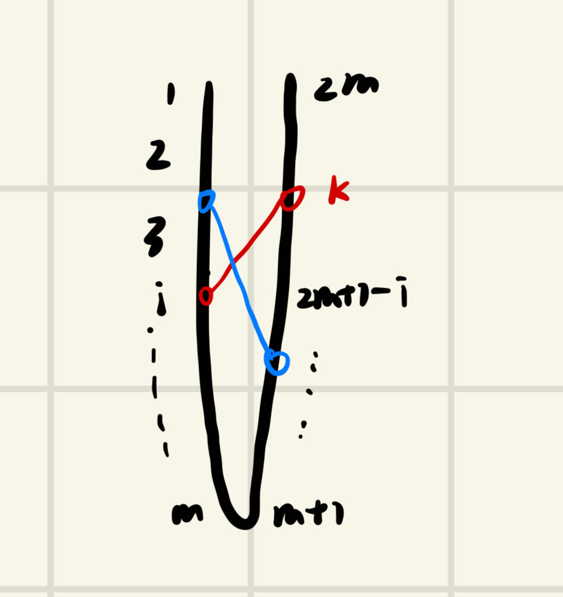

复杂度理论作业3
2.1
a
对于每个节点 \(d_i \in D\),令 \(c(d_i)\)为 \(F\) 中离\(d_i\)最近的点。令这个问题最优解为\(OPT\),可以注意到 \(dis(d_i,c(d_i)) \leq OPT\)
如果
\(|D| \leq k\),那么取 \(S=\{c(d_i)\}\),注意到这样的解显然是不劣于 \(OPT\)
\(|D| > k\),那么对 \(D\)执行 k-center的2近似算法，设最终结果为\(\{d'_1,d'_2,...d'_k\}\)。取\(S=\{c(d'_i)\}\)
对于任何一个\(v \in F\),如果\(dis(v,D) \geq 2OPT\)，根据k-center的2近似算法表明，\(\forall i,j \in [k],dis(d'_i,d'_j)\geq 2OPT\)但是考虑最优解的局面，每个最优解必然以\(OPT\)为半径覆盖了所有点，由于\(|D|>k\),根据抽屉原理，一定有两个cunstomers 处于同一个覆盖圆里面，那么他们的距离将会小于 \(2OPT\),矛盾。
因此 \(\forall v\in F,dis(v,S) \leq 2OPT\),又因为 \(\forall i \in [k],dis(d'_i,c(d'_i)) \leq OPT\),由三角不等式，\(dis(v,S)\leq 3OPT\),得证
b
如果存在小于3的常比近似
考虑解决k-dominant 问题，对于给定的无向图 \(G=(V,E)\)，用下述方法构造新图：对于原图中每个节点 \(v_i\),创建俩节点\(f_i,d_i\)分别为supplier和customer，所有supplier内部两两连边权为2的边，对于每个\(v_i\)，设在\(G\)中它连了\(S_i\)的点，那么\(f_i\)向\(\{d_j| j\in S_i \}\)都连一个边权为1的边，其它没连的边都连边权为3的边。
在这个新图上跑\(\alpha-app(\alpha <3 )\)的k-supplier算法，如果OPT是1，那么表明原图存在k-dominant，近似算法会给出\(\alpha\)的解，但是这样的解一定只能是1，因此这就完美解决了k-domiant这个NPC。
2.2
显然要把jobs两两配对
将\(2m\)个jobs降序排序:

这样构造出的最优解是\(C_{max}=p_i+p_{2m+1-i}\),假设有另一种分组方式使得最大值\(C'_{max} < C_{max}\),那么\(p_i\)的另一半\(p_k\)一定有 \(p_k<p_{2m+1-i}\),这说明\([i-1]\)中一定有货物无法匹配到\([2m+2-i]\)中的job（图中蓝色那一对），那么这一对的和显然大于 \(p_i+p_{2m+1-i}\)也就是大于\(C_{max}\), 矛盾!
2.3
将解分为两部分，一部分是没有机器idle的时间们，设这一段总时长为\(a\),显然\(a \leq \frac{\sum p_i}{m}\leq OPT\)
第二段是有机器空闲的时间段，为什么机器会空闲呢，因为在有向图上，每个待加入的节点都在被之前的点牵制，因此这些空闲时刻一定有一串jobs满足\(j_1 \prec j_2 \prec ... \prec j_k\),显然这个和不超过\(OPT\)
最后总和\(=a+b\leq OPT\)